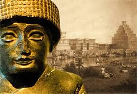
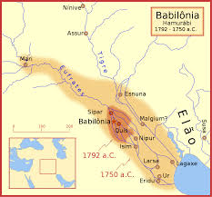

A Conquista da Suméria
A Conquista da Suméria, foi um processo histórico, que durou mais de mil anos. Este processo levou a formação
dos primeiros estados e impérios da história. Esses estados e impérios, ascenderam-se na região da
Mesopotâmia, principalmente na Suméria (encontrada atualmente no sul do Iraque). A Suméria é considerada
hoje o berço da civilização devido ao fato de já terem sua própria escrita, a cuneiforme. Mais antiga que os
hieróglifos, considerada o primeiro tipo de escrita da história. Agora vamos ver melhor os detalhes:

Inicio e Desenvolvimento das Cidades-Estado (4500-2900 a.C):
CIDADES-ESTADOS SUMÉRIAS: As cidades-estado como Ur, Uruque, Lagaxe, e Quixe surgiram na Suméria por volta
de 4500 a.C, cada uma governada por líderes locais e centradas em torno de templos religiosos.
ESCRITA CUNEIFORME: Os sumérios desenvolveram a escrita cuneiforme por volta de 3400 a.C., inicialmente
para registros comerciais e administrativos, mas que eventualmente se expandiu para a literatura e a
transmissão de mitos e leis.
DESINVOLVEMENTO AGRÍCOLA e URBANIZAÇÃO: A Suméria era uma região fértil graças aos rios Tigre e Eufrates,
o que possiblitou o desenvolvimento de uma agricultura intensiva e o crescimento de cidades densamente povoadas

Conflitos e Unificação
CONFLITOS ENTRE CIDADES-ESTADO: As cidades sumérias frequentemente entravam em conflito por recursos, território
e influência. Um dos principais motivos para os conflitos eram as regiões férteis em torno dos rios Tigre e
Eufrates. Isso levou ao desenvolvimento de sistemas defensivos e à necessidade de liderança militar.
REFORMAS SOCIAIS E LEGAIS: Em 2350 a.C., Urukagina de Lagaxe tentou implementar reformas para proteger os
direitos dos cidadãos comuns e limitar o poder dos templos e elites. Infelizmente, essas reformas duraram por um
curto período de tempo. Mas essa foi a primeira tentativa de uma sociedade justa e igual, sem um só no poder e os mais
pobres morrendo trabalhando.

Ascensão do Império Acádio (2334-2154 a.C)
ORIGEM DE SARGÃO, O GRANDE: Muitos dos fatos a seguir vem de lendas e contos, por isso é provavel que algumas
partes estejam exageradas. Sargão cresceu com uma familia adotiva, já que veio boiando em um rio em uma cesta
de juncos. A história em si se parece muito com a de Moisés.
A VIDA HUMILDE DE SARGÃO: Segundo as inscrições e lendas sumérias, Sargão começou sua vida como um humilde
servidor de bebidas para Ur-Zababa, rei de Quixe. Ele era de origem comum e não nobre, o que torna sua
ascensão ao poder ainda mais notável.
ASCENSÃO AO TRONO DE QUIXE: Em um evento notável, descrito nas inscrições, Sargão teria sido favorecido pela
deusa Inana (Ishtar) para assumir o trono de Quixe, após uma série de eventos miraculosos envolvendo sua
ascensão no palácio real.
IMPÉRIO ACÁDIO: Sargão então, após se tornar rei, iniciou uma campanha, onde através de táticas militares organizadas (sendo também a primeira vez que usaram táticas militares organizadas, estilo romano por assim dizer),
conquistou diversas cidades da Suméria dando inicio ao Império Acádio, o primeiro império da história.

O Fim do Império Acádio e A Terceira Dinastia de Ur (2154-2112 a.C)
AS REBELIÕES INTERNAS: O império Acádio durou um total de 3 gerações. O neto de Sargão estava no poder quando
tudo começou a ruir. O povo já não tinha gostado dos filhos de Sargão no poder, agora os netos. Então, aos poucos, pequenos
atos de desgosto contra o governante começaram a acontecer, tentando recuperar a sua antiga independência de suas cidades-estado. Mas o neto de
Sargão, Naran-Sin, aguentou firme, e talvez ele tivesse conseguido controlar as rebeliões, se não fosse pelos Gútios.
AS INVASÕES DOS GÚTIOS e A QUEDA DO IMPÉRIO: Os Gútios, um povo montanhês, invadiram a Mesopotâmia, saqueando e
pilhando as cidades. Para piorar a situação, uma grande seca abateu a região, sendo um problema já que grande
parte do comércio, popularidade e renda era em base da agricultura. Enquanto os soldados enfraquecidos tentavam
controlar os Gútios, a população culpou o neto de Sargão pelos problemas. E assim, o Império Acádio ruiu.
O PERÍODO DE ANARQUIA: A Mesopotâmia então, adentrou em uma idade das trevas, pois os Gútios eram terrivelmente
cruéis, e o povo da Suméria já começava a se arrepender da rebelião contra o império Acádio.
A ASCENSÃO DA TERCEIRA DINASTIA DE UR: Na cidade de Ur, os soldados conseguiram expulsar os Gútios. Então, motivados
pela vitória, conseguiram reunificar a Suméria e expulsar os invasores. Assim, surgiu a Terceira Dinastia De Ur.

Conquista Dos Impérios Amorita e Elamita (2004-1750 a.C)
A QUEDA DE UR: Por volta de 2004 a.C, a Terceira Dinastia de Ur foi derrubada pelos Elamitas, um povo do sudoeste do
Irã moderno. Eles saquearam Ur e levaram o rei Ibbi-Sin como prisioneiro.
CIDADES-ESTADO RIVAIS: Após a queda de Ur, as cidades de Isin e Larsa emergiram como potências rivais, tentando
controlar a Suméria. Este período foi marcado por conflitos constantes entre essas cidades-estado.
DOMÍNIO DA BABILÔNIA: Por volta de 1900 a.C, os Amoritas começaram a estabelecer domínio sobre a região, com a cidade
de Babilônia eventualmente emergindo como uma potência dominante sob o rei Hammurabi.
O FIM DA IDEPENDÊNICA SUMÉRIA: Sob Hammurabi, a Suméria foi finalmente incorporada ao crescente Império Babilônico, marcando
o fim da independência das cidades-estado sumérias.
